The approved textured metal blade with a dark outer outline, including the revised mounted idle. Mounted idle, riding, and attacks carry the sword in the left hand. It is a separate custom item with bardiche stats and varied bash, wide-swing, and stab attacks.
24 animations · 675 unique sprites · five stored directions. Previews show the game-encoded sprites over the original UO male body and gray horse. The remaining three directions are mirrored by the client.
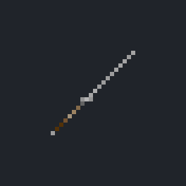
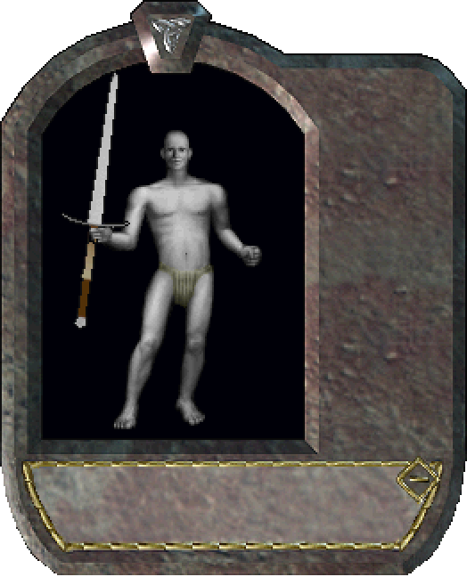
| Animation | Front | Down-left | Side | Rear three-quarter | Back |
|---|---|---|---|---|---|
| 01 · Walk, armed10 frames | 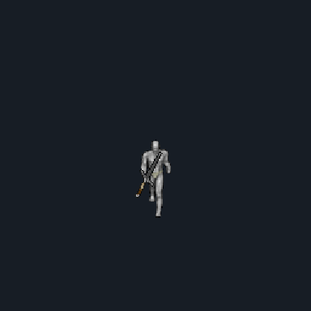 | 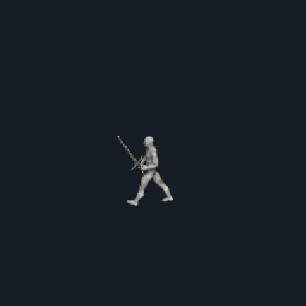 | |||
| 03 · Run, armed10 frames | 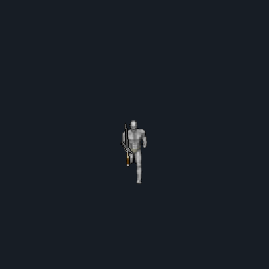 | 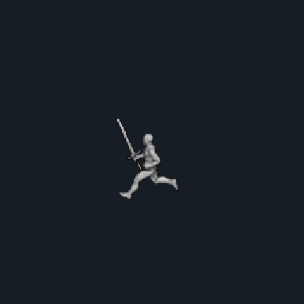 | 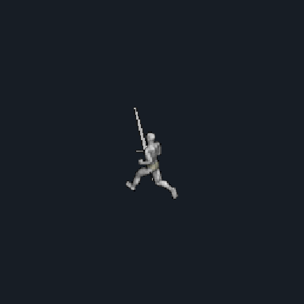 | 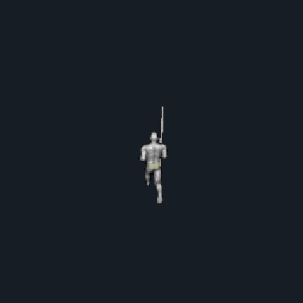 | |
| 04 · Neutral standing pose1 frame | 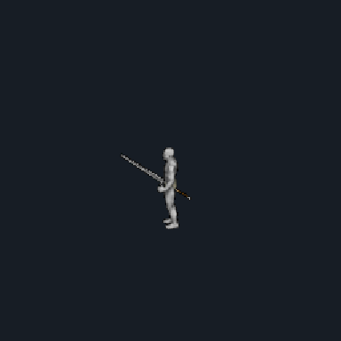 | 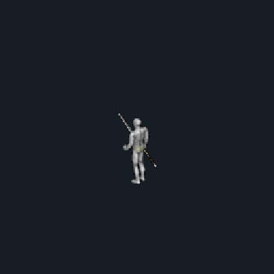 | |||
| 05 · Idle fidget 15 frames | 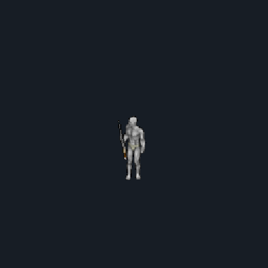 | 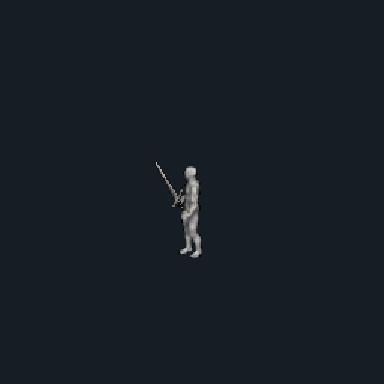 | 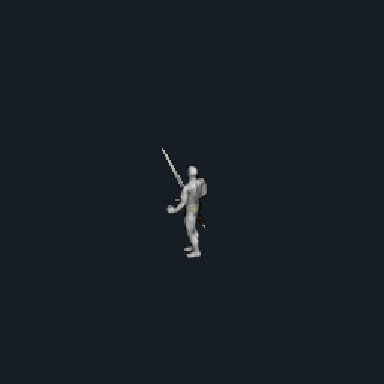 | 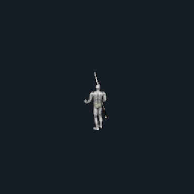 | |
| 06 · Idle fidget 25 frames | 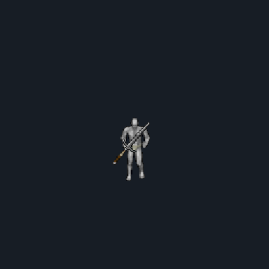 | 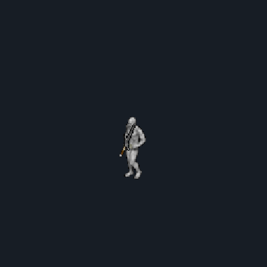 | 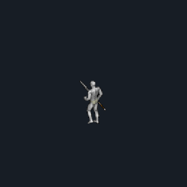 | ||
| 08 · Two-handed combat ready pose1 frame | 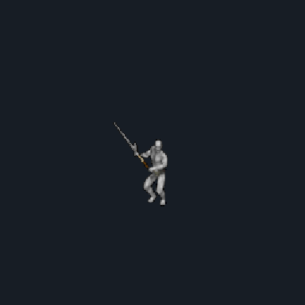 | 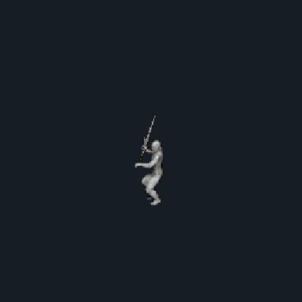 | 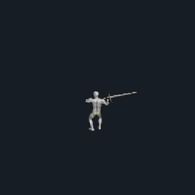 | 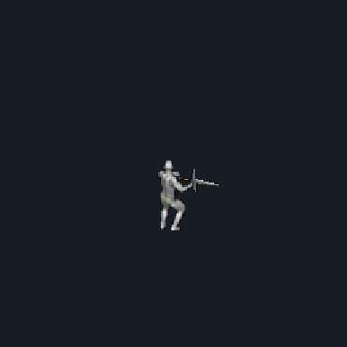 | |
| 12 · Two-handed downward attack7 frames | 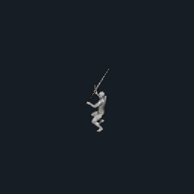 | 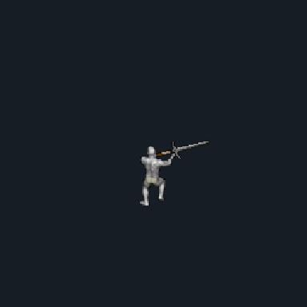 | 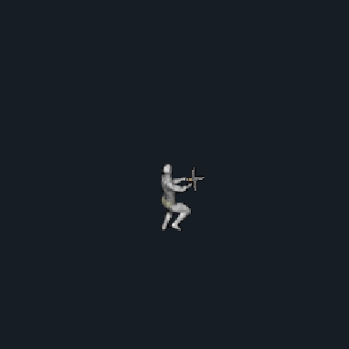 | ||
| 13 · Two-handed wide attack7 frames | 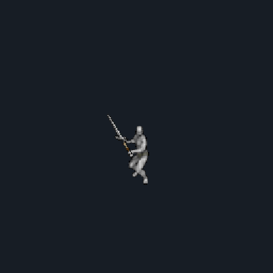 | 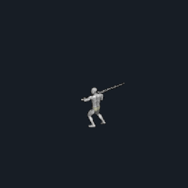 | 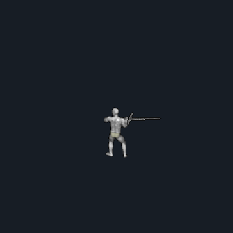 | ||
| 14 · Two-handed thrust7 frames | 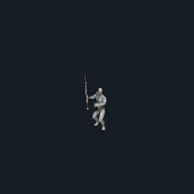 | 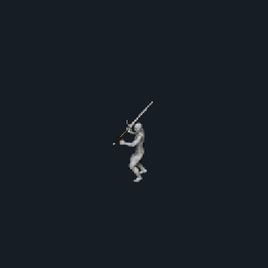 | 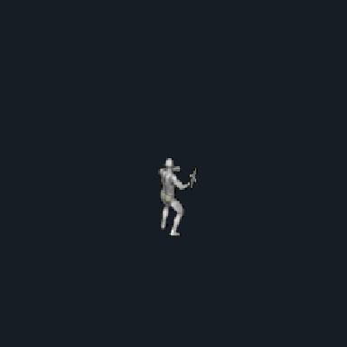 | ||
| 15 · Combat walk10 frames | 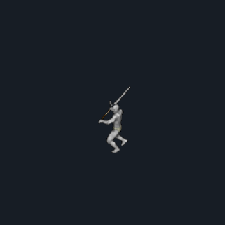 | 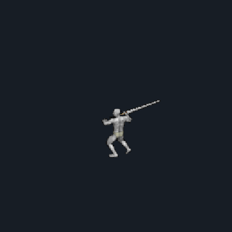 | 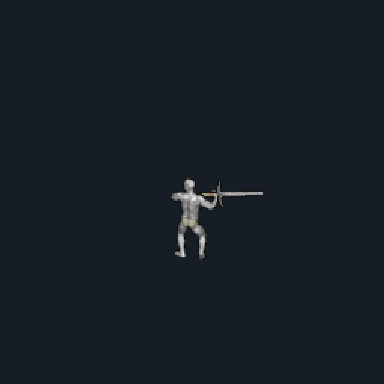 | 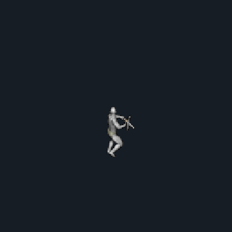 | |
| 16 · Directed spell cast7 frames | 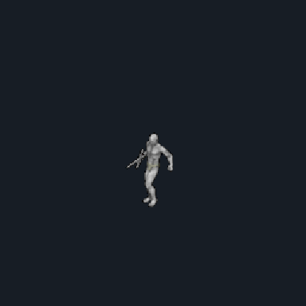 | 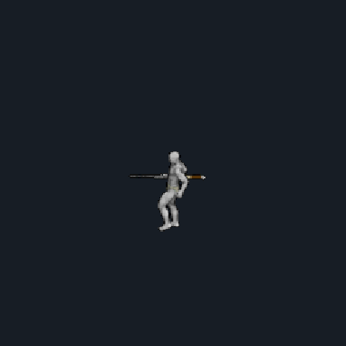 | 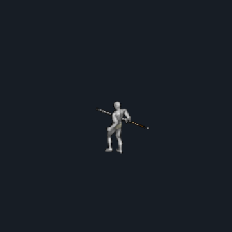 | ||
| 17 · Area spell cast7 frames | 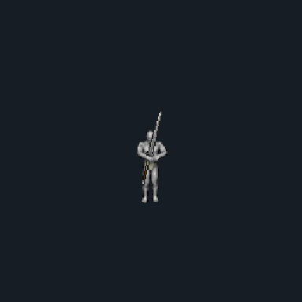 | 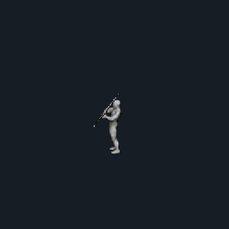 | 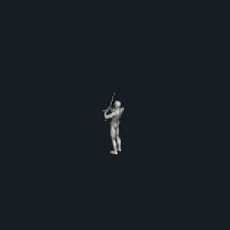 | ||
| 20 · Hit reaction5 frames | 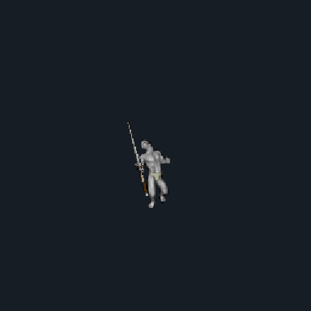 | 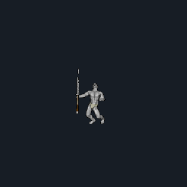 | 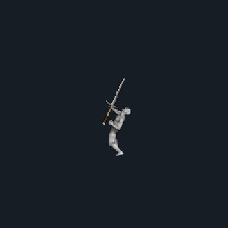 | ||
| 21 · Death 16 frames | 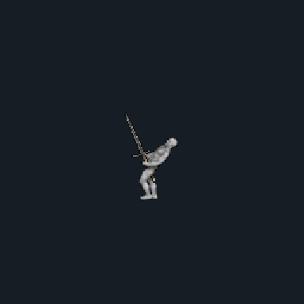 | 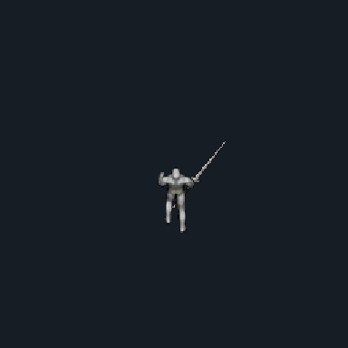 | |||
| 22 · Death 26 frames | 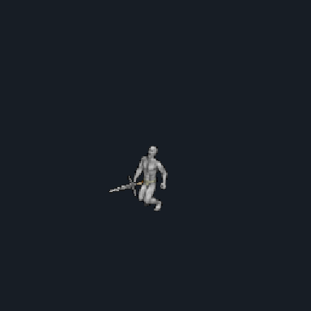 | ||||
| 23 · Mounted slow riding5 frames | 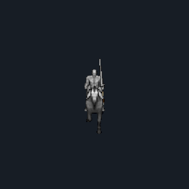 | 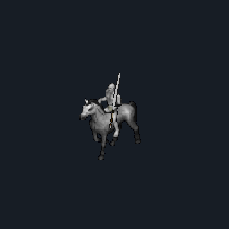 | 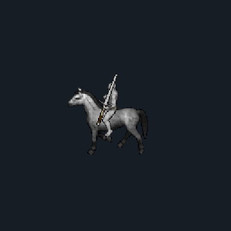 | 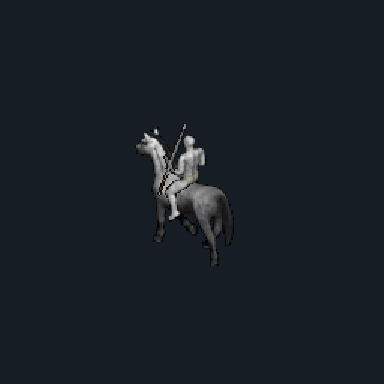 | |
| 24 · Mounted fast riding5 frames | |||||
| 25 · Mounted stationary pose1 frame | |||||
| 26 · Mounted melee attack5 frames | |||||
| 29 · Mounted slap / urge mount5 frames | |||||
| 30 · Turn gesture5 frames | |||||
| 32 · Bow emote5 frames | |||||
| 33 · Salute emote5 frames | |||||
| 34 · Idle fidget 35 frames |